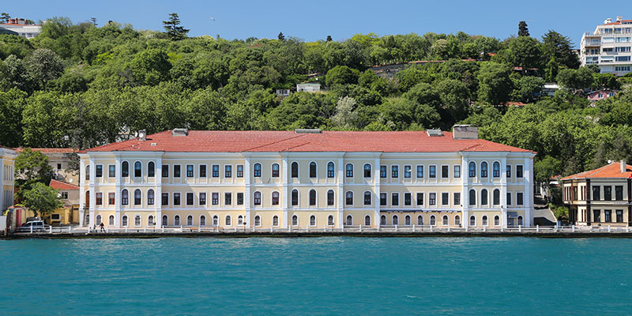

Japanese Turkish Joint Geometry Meeting
21-24 November 2013
Galatasaray University, İstanbul, Turkey
Objectives
This is the first joint meeting of Japanase and Turkish geometers.
Topics include Teichmüller spaces, mapping class groups, monodromy and
algebraic geometry, arithmetic geometry hypergeometric functions,
singularities.
There will be a possibility for young researchers to
present short research talks and make poster presentations.
More information: Abstracts
We are happy to announce that there will be a satellite meeting right after the meeting. For more information, click here.
Scientific Committee
- İlhan İkeda (Yeditepe University)
- Yıldıray Ozan (Middle East Technical University)
- Athanase Papadopoulos (Strasbourg University)
- Susumu Tanabé
(Galatasaray University) (Chair)
- A. Muhammed Uludağ (Galatasaray University) (Chair)
- Sumio Yamada (Gakushuin University)
- Masaaki Yoshida (Kyushu University)
Organizing Committee
- Merve Durmuş (Yeditepe University, İstanbul)
- Tadashi Ishibe (University of Tokyo, Tokyo)
- İrem Portakal (Galatasaray University, İstanbul)
- İsmail
Sağlam (Koç University, İstanbul)
- Celal Cem Sarıoğlu (Dokuz Eylül University, İzmir)
- Ayberk Zeytin (Galatasaray University, İstanbul)
Speakers
- Norbert A'Campo (Universität Basel, Basel)
- Kürşat Aker (Middle East Technical University - Northern Cyprus Campus, Cyprus)
- Arzu Boysal (Boğaziçi University, İstanbul)
- Zübeyir Çınkır (Zirve University, Gaziantep)
- Alexander Degtyarev (Bilkent University, Ankara)
- Sultan Erdoğan Demir (Istanbul Technical University, İstanbul)
- Sergey Finashin (METU, Ankara)
- Hidekazu Furusho (Nagoya University, Nagoya)
- Tadashi Ishibe (University of Tokyo, Tokyo)
- Masaharu Ishikawa (Tohoku University, Sendai)
- Ken'ichi Ohshika (Osaka University, Osaka)
- Mutsuo Oka (Tokyo Institute of Technology, Emeritus, Tokyo)
- Burak Özbağcı (Koç University, İstanbul)
- Özer Öztürk (Mimar Sinan Guzel Sanatlar University, İstanbul)
- Kyoji Saito (IPMU, University of Tokyo, Tokyo)
- Jiro Sekiguchi (Tokyo University, Tokyo)
- Erol Serbest (Yeditepe University, İstanbul)
- Hiroaki Terao (Hokkaido University, Hokkaido)
- Kazushi Ueda (Osaka University, Osaka)
- Sinan Ünver (Koç University, İstanbul)
- Saadet Öykü Yurttaş (Dicle University, Diyarbakır)
- Ayberk Zeytin(Galatasaray University, İstanbul)
Program
Schedule is announced here.
Application
Registrations are now closed.
Location
J-T Geometry Meeting and Satellite Mini-Symposium will be located in Galatasaray University Yıldızhan Yayla Salonu.
Registration Fee
50 Euro (Junior), 100 Euro (Senior)
Those who cannot cover this expense from their grants
should get in touch with the organising committee.
J-T Joint Geometry Meeting Satellite Mini-Symposium
The program for mini-symposium can be accessed here.
Prof. Jiro Sekiguchi and Dr. Tadashi Ishibe are organizing a mini-symposium during the period 25-26 November, after the Japanese - Turkish joint Geometry Meeting. Those who are interested in giving a talk during the mini-symposium can contact the above mentioned organizers or Prof. Susumu Tanabe.
Help
When you need a help, please contact with the organizing committee.
Hotel Info
The official hotels of the workshop are Harem Hotel and Yeni Saray Hotel. (subject to change) In case you prefer a more comfortable stay, you may make your own hotel reservation, preferrably in the quarters of Galata, Cihangir, Beşiktaş, Ortaköy or Üsküdar.
- Harem
Hotel (***)
Address: Ambar Sokak, No:2 Selimiye 34668 Istanbul - TURKEY
Phone: +90 (216) 310 68 00 Fax: +90 (216) 334 77 30
web: http://www.haremhotel.com/en/ E-mail: info@haremhotel.com
Room prices: TBAHarem hotel has 100 rooms. All of its rooms are equipped with satellite TV, individual air conditioner and central heating, WC, shower cabin, hair dryer, mini bar (stuff inside the mini bar is not included to room price), wi-fi, phone. Breakfast is an open buffet and its bar is 7/24 open and there is also a Laundry, meeting room, generator. In addition, there are a swimming pool, Turkish Bath and Sauna (steam room), and these are free. This hotel is near the Harem otogar and Harem-Sirkeci ferry port, and at 30 minutes walk-distance to Üsküdar. Between Harem hotel and Üsküdar either you can walk along seaside or take a dolmuş (or taxi). But if you have time, it is suggested to walk along seaside, near the maiden's tower you can give a tea break. To learn the location of Harem hotel and some other important places you can use this interactive googlemaps.
How to go to Harem Hotel from Atatürk airport?: there are 3 or more ways:
* First and easist way, of course taking a taxi to Harem, it will cost ~80TRY (1,5 hour). Especially prefer this way after midnight, beacuse you may not find a ferry or a tram after midnight.
* Second way, get on a Metro at the Ataturk airport and change it to tram at Zeytinburnu. Get off from the tram at Sirkeci. Then get on a ferry from Sirkeci to Harem and cross the sea (To ceheck the Sirkeci-Harem ferry schedule, pleaseclick here). When you reach the Harem ferry port, on the top of hill you will see the Harem hotel, walk up to there. * Third, if you miss the Sirkeci tram station or in that hour if there is no ferry from Sirkeci to Harem, you can get on a ferry/boat either from Eminönü or Karaköy or Beşiktaş to Üsküdar. Then, get on a dolmuş from Üsküdar to Harem, and get of near the Harem Otogar, or take a taxi.How to go to Harem hotel from Sabiha Gökçen airport?: there are 2 ways:
* First and easist way, of course taking a taxi to Üsküdar, it will cost ~70TRY (1 hour).
* Second but cheapest way, havataş shuttles. Get on a havataş shuttle to Kadıköy (12 TRY, check the shuttle schedule from here), and then take a taxi to Harem (10 TRY).How to go to Galatasaray University from Harem hotel?
First walk down up to main street, then get on a dolmuş to Üsküdar (if you are four people, you can take a taxi, it will totally cost cheaper than dolmuş's.) and get off at Üsküdar. Probably the driver will drop you before ferry port. Do not worry, just follow the crowd (If you have time, it is suggested to walk along the seaside to Üsküdar from the hotel (30 minutes), you will have great times). Get on a ferry/boat from Üskdar to Beşiktaş and cross the Bosphorus (you will really enjoy this trip). When you arrive to Beşiktaş, walk 15 minutes along Çırağan street (the main street parallel to the sea) in the direction of Ortaköy, then you will see the main entrance of the university on the right. - Yeni
Saray Hotel (**)
Address: Selmanipak Caddesi, Çeşme Sokak, No:31, Üsküdar, Istanbul - TURKEY
Phone: +90 (216) 553 07 77 / 334 34 85 Fax: +90 (216) 334 56 55
web: http://www.yenisarayotel.com/english.index.html E-mails: info@yenisarayotel.com / yenisarayhotel@yahoo.com
Room prices: TBAYeni Saray hotel has 39 rooms. All of its rooms are equipped with satellite TV, individual air conditioner and central heating, WC, shower cabin, hair dryer, mini refrigerator (drinks inside of the refrigerator is not included to room price), wi-fi, phone. There is a bar and Laundry. This hotel is at the center of Üsküdar, near the Kanaat Lokantası (Kanaat Restaurant) and at 5 minutes walk distance Üsküdar-Beşiktaş ferry port. To learn the location of Yeni Saray hotel and some other important places you can use this interactive googlemaps.
How to go to Yeni Saray hotel from Atatürk airport?: there are 3 or more ways:
* First and easist way, of course taking a taxi to Üsküdar, it will cost ~80TRY (1,5 hour). Especially prefer this way after midnight, beacuse you may not find a ferry or a tram after midnight.
* Second but cheapest way, get on a Metro at the Ataturk airport and change it to Tram at Zeytinburnu. Get off from the tram at Eminönü. Then get on a ferry from Eminönü to Üsküdar and cross the sea (the last ferry is at 23:00, to check the winter-time schedule of the Eminönü-Üsküdar ferry, please click here). Then ask some one the Yenisaray Hotel (or its nextdoor the Kanaat Restraunt).
* Third, if you are using Havaş shuttles, first you will come to Taksim, then either get on a bus or take a taxi to Beşiktaş, and then get on a ferry to Üsküdar (after midnight there is no ferry from Beşiktaş to Üsküdar).How to go to Yeni Saray hotel from Sabiha Gökçen airport?: there are 2 ways:
* First and easist way, of course taking a taxi to Üsküdar, it will cost ~70TRY (1 hour).
* Second but cheapest way, havataş shuttles. Get on a havataş shuttle to Kadıköy (12 TRY, check the shuttle schedule from here), and then either get on a Kadıköy-Üsküdar bus (12a), or take a taxi. The last stop of the buss is at walk distance to hotel.How to go to Galatasaray University from Yeni Saray hotel? : First walk 5 minutes up to Üsküdar-Beşiktaş ferry port, there are private ferries near the park (they are more confortable, same price, and there is a ferry per 15 minutes). Get on a ferry from Üsküdar to Beşiktaş. When you arrive to Beşiktaş, walk 15 minutes along the Çırağan Street (the main street paralel to the sea) in the direction of Ortaköy, the main entrance of the university is on the right. You may practice this interactive googlemaps.
- La Maison(***):
Address: Muvezzi Cad. No:63, 80700 Çırağan, Beşiktaş, İstanbul_TURKEY
Phone: + 90 (212) 227 42 63 Fax: +90 (212) 258 87 29
Web: http://www.lamaison.com.tr E-Mail: mail@lamaison.com.tr
Room prices: TBALa Maison hotel has 34 rooms. All of its rooms are equipped with satellite TV, individual air conditioner and central heating, WC, shower cabin, hair dryer, mini bar (stuff inside the mini bar is not included to room price), wi-fi, saffety box. There is a bar, laundry, meeting room, generator and Otopark.
La Maison Hotel is at 20 minutes walk distance from the Galatasaray University. To learn how you can go to the La Maison hotel, please read the paragraph answering the question How to reach Galatasaray University? which is in the Useful info part of this page. Keep in mind that, Müvezzi street is near the 5-star luxiruous hotel, named Çırağan Hotel Kempinski which is a part of the Çırağan Palace, starts near from the bus stop and goes up (250 m) along the Yıldız Park. (At the beginning of the Müvezzi street, on the left side there is an old hotel, named Çırağan hotel, and on the right side there is a Yıldız park with high walls. If you saw these, you are on the right street.) If you walk 7-8 minutes along the Müvezzi street, on the top of hill you will see La Maison hotel. You may practice on this interactive googlemaps.
If you are planning to stay at La Maison hotel, please make your own reservation from its webpage or contacting them via e-mail: mail@lamaison.com.tr. Since La maison hotel is quite confortable, it will be much more expensive comparing to the Harem Hotel and Yeni Saray hotel.
- SED Hotel (**)
Address: Ömer Avni Mah. Besaret Sk. No:14 Ayaspaşa 80040 İstanbul - TURKEY
Phone: +90 (212) 252 27 10 / Fax: +90 (212) 252 42 74
web: http://www.sedhotel.com/ E-mail: info@sedhotel.com
Room prices: TBASED hotel has 50 rooms. All of its rooms are equipped with satellite TV, individual air conditioner and central heating, WC, shower cabin, hair dryer, mini refrigerator (stuff inside the refrigerator is not included to room price), wi-fi, phone. There is a bar and Laundry. To learn the location of SED hotel and some other important places you can use this interactive googlemaps.
If you take a taxi from Atatürk airport, give the adress to driver, Probably he knows the hotel. In any case keep in mind that this hotel closed to both of Kabataş tram station (if driver is near the kabataş) and AKM building and German consulate (if driver is near Taksim, this sketch will be useful).
There is another way to SED hotel from Atatürk airport. Get on the Metro at airport and change to Tram at Zeytinburnu. The last stop of tram is Kabataş. Then ask some one the place of SED otel. Do not forget, after midnight there is no Metro and Tram. Third way, take a Havaş shuttle from airport to Taksim, and then either walk or take a taxi to SED hotel. You may practice on this interactive googlemaps.
{kind=link}
Useful Info
- How to reach Galatasaray University?:
Galatasaray University is 24 km away from the İSTANBUL ATATÜRK AIRPORT. Right in front of the exit door of the Ataturk International Airport, take the HAVATAŞ bus to TAKSİM (40 mn, 10 TRY) and get off at the last stop, TAKSIM SQUARE (for detailed information about HAVATAŞ buses please visit http://havatas.com/en/coach.aspx?i=1 ). Then either take a taxi (15mn, ~15 TRY), or take a bus and get off at the stop Galatasaray University. The number of busses are: 40 (Taksim - Sarıyer), 42T (Taksim - Bahçeköy), 40T (Taksim - İstinye - Dereiçi), DT1 (Taksim - Ortaköy Dereboyu), DT2 (Taksim - Ortaköy Dereboyu).
Second possibility, from İstanbul Atatürk Airport to Galatasaray University is taking a taxi (45 mn, ~70 TRY).
Finally, you may take the metro from İstanbul Atatürk Airport and change to tramway at the Zeytinburnu station. Get off at the last stop in Kabataş. From Kabatas taxi costs 8 TRY, there are also regular buses (get on the bus going to Ortaköy direction).
If you are coming from Sabiha Gökçen Airport, take the HAVATAŞ bus to TAKSİM (~1.5 hr, 17 TRY) (for more detailed information, please visit http://havatas.com/en/coach.aspx?i=2 ).
Keep in mind that, Atatürk Airport is more closer than Sabiha Gökçen Airport to the Galatasary University.
- Local Information:
Galatasaray University is at 10-15 minutes by walk from both Beşiktaş and Ortaköy. If one wants to take a bus to University, he/she can take any bus working on the shore (for example, the number of busses from Kabataş: 22, 22RE, 25E; from Ortaköy: 40, 40T, 42T, DT1, DT2).
The best way to reach Galatasaray University from Anatolian side of the city is to take a boat to Beşiktaş from Kadıköy or Üsküdar.
For Metro, Tram, Ferry 9and Busses either you can use Akbil (1.95 TRY per trip, and you can charge your Akbil Card) or use tickets (1 ticket: 4 TRY, 2 ticket: 7 TRY, 3 ticket: 10 TRY, 5 ticket: 15 TRY, 10 ticket: 28 TRY).
- Time Schedule of IDO Ferries: http://sehirhatlari.com.tr/en
- Istanbul Rail Network Map http://www.istanbul-ulasim.com.tr/media/8540/erisim_2200px_1546px-01.jpg
- Bank Services:
In general Banks are open between 8:30 - 17:30 from Monday to Friday.
- Currency:
The currency in Turkey is Turkish Lira (TRY). Actually 1 US $ = 1.95 TRY and 1 Euro = 2.60 TRY (August 20, 2013).
- Drinking Water:
Although it is safe to drink tap water, it is recommended to buy bottled drink water which can be found almost everywhere at stores. There are several supermarkets in Beşiktaş which is 15 minutes on walk from GS University. You can safely brush your teeth with tap water.
- Electricity:
The electricity supply is 220 V, 50 Hz, with the type of sockets which are standard in most European countries.
- Language:
In Turkey the official language is Turkish. The Turkish language comes from Central Asian Languages Family and very different from the european languages. The Turkish alphabet is based on the latin alphabet. In general, in Istanbul many people talk English and you can easily communicate with other people. As İstanbul is a touristic city you can find many tourism offices.
- Phone Information:
As it belongs to two continents in İstanbul there are two geographical regions : European and Asian sides. The local telephone code of European side is 212 and the one of the Asian side is 216. The national telephone code of Turkey is 90. All of the telephone numbers consist of 7 digits. For example telephone number of Galatasaray University is 2274480 and the code of the European side is 212. So if you want to call Galatasaray University from Asian side the number transforms into 0 212 2274480. If you want to call the same number from abroad it transforms into 00 90 212 2274480. There are prepayed telephone cards of Turkish Telecom specially designed for calling abroad.
- Shopping:
Almost all of the shopping centers are open every day until 22:00 hours.
- Safety:
Beware of dangerous and inconsiderate driving, especially when crossing roads. Even if you are on a pedestrian crossing, look carefully before crossing. Turkey is a comparatively safe country as far as crime is concerned, but it is best to take reasonable precautions against pickpockets in crowded areas.
- Time Zone:
The time zone is 1 hour later from Central European Time Zone, 2 hours later from the Greenwich Mean Time.
- Visa information for foreigners (general):
http://www.mfa.gov.tr/visa-information-for-foreigners.en.mfa"
{kind=link}
© GSÜ Math. Tüm hakları saklıdır.